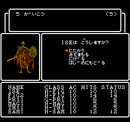

プログラミングという趣味
いつごろにプログラミングをはじめたか, またそのきっかけは。
丁度小学生の頃。世の中では, インターネットが普及し, YouTubeやニコニコ動画などの動画サイトで動画が見られるようになった。
僕は, もともと外で良く遊ぶタイプではあったが, ゲームももちろん好きで, 当時においてもファミコンからPlayStation2,ニンテンドーDSに至るまでのゲームをやりつくしていた。そんなある時, ファミコンの動画を見ていたら, ファミリーベーシックというものを発見した。 それは, ファミコンの付属機器として, 1984年に発売されたもので, その当時はパソコンが数十万はあたり前にかかり, 一般庶民には手を出しづらいようなこともある中で, 「ファミコンに繋ぐだけでできる, お手軽パソコン」ということを売り文句にして販売されていた安価なBASICコンピューターであった。
もちろんながら, 当時のそんな世情は知らない僕であったが, その一風変わったゲーム画面に興味を抱き, 父親に尋ねたところ, ある日, ニンテンドーDSソフトである「プチコン」というBASICプログラミングソフトを提示してくれた。
その「プチコン」というソフトに関して, 当初は何をして良いのか, 全く分からなかったが, 説明書やインターネットでのWikiを見ている内に, その動かし方を理解し, それ以降簡単なゲームが作れるようになった。
それからというもの, 時代は最先端のPS3やニンテンドーDSというゲーム機がある中, 80年代初期のBASICパソコンに模した作りのソフトに熱中し, ゲームを作り続けるとともに, インターネットサイトで, プログラミングや電子回路の知識を手に入れるようになった。
これが, プログラミングや電子回路を始めたきっかけの概略である。(電子回路については, 電子回路のページを参照されよ)
どのようなものを作ったか。また, 今後の展望について。
- 
- ↑ファミコン ウィザードリィ
画像は自前で用意したが, Wizについてはリンク先が参考になる。
上記のとおり, プログラミングを始めたきっかけには, 「プチコン」というBASICプログラミングを学ぶためのツールを利用していたことから, 一番最初に作った作品は3DS上で動く, 数あてゲームやレトロゲーム風ADV(アドベンチャーゲーム)であった。当時の作品の画像は, 今手元にないので, ファミコンの「ウィザードリィ」というゲームの画像で示すが, こんな雰囲気のゲームを作成していたのである。
引用の必要性の担保のため, ウィザードリィというゲームを紹介すると、ウィザードリィは1981年にApple II用に開発され発売されたゲームであり, 当時, このような洗練されたシステムのアドベンチャーゲームはなかったことから目新しさもあり, 現在日本で有名なRPGである, ドラゴンクエストに関しても、元祖RPGであるウィザードリィを参考にしたものであるなど, 後のゲーム史に多大な影響力を示したゲームである。
筆者も好きなゲームの一つであり, そのシンプルなシステムと異常なまでの難易度, カオスさにはスリルとわくわく感がかきたてられるものである。
少々話が脱線したが, 当時はこのような, ウィザードリィ風のゲームや, ケムコのADVとして有名な「シャドウゲイト」のような作品をオリジナルで作っていた。
それ以降は, プチコンも卒業し, 電子回路の知識と相まって, マイコンを制御するためのプログラミングを学習することにシフトした。
そのためには, いままで使っていたBASICとは別の言語, C言語を習得しなければいけなくなり, そのためのプログラミングの本を読書タイムの時間を活用して読むこととした。 当時読んでいた本は, 余裕があればまとめる予定の記事, 「オススメのプログラミング学習本」にて紹介する予定であるが, 著:柴田望洋 の新・明快C言語が大変分かりやすかった。
当時利用していたマイコンは, AVRマイコンとArduinoであり, AVRマイコンの方はアセンブラでの記述が基本となっていたため, 敷居が高かったが, 一応C言語での開発環境も用意されていた。 一方Arduinoの方は, その開発環境は大変良くできていて, そのままC言語で組み込むことができて, 簡単であるとともに, ライブラリーの使用もできたため, 基本的には, こちらを使用する機会が多かった。
それ以後も, 時々マイコンを弄る機会はあったのだが, 高校に入ってからというもの, 夏休みの工作もなくなり, 弄る機会もすっかり減ってしまった。 実は, 上記の2つのマイコンの他にRaspberry Piというマイコンも用意していたが, あまり工作に使用する機会はないまま, 現在も手元に置いたままとなっている。
他には, 高校の在学中にポケットコンピュータというものを購入し, 現在も時々それで遊ぶ程度であり, それ以外では関数電卓として使用する機会の方が多くなっていたりと, マイコン関係のマイブームは廃れはててしまったようだ。
その一方で，パソコン上でもゲームが動かせるようにしたい。また，マイコンでは性能的に難しいような，高度な技術とグラフィックもパソコン上では可能になることから，そういった方面のプログラミングを習得しようと試みたこともあった。 そのため，高校時代には，JavaやAndroidソフト開発のような本を読んだり，ゲーム3D数学のような，数学での線形代数を利用して，3Dグラフィックスを実装する本を読んだりすることもあったが，結局のところ，実際に手を動かして作ることは怠慢にもなかったのである。
最近では, 近年時代錯誤感が強いマイコンのマイブームが過ぎたことで, 新たにパソコンやスマートフォン, タブレット上で動くゲームソフトを開発したいと思っている。 今までそのようなことに, 着手したことがなかったため, どんどんと勉強していく必要があるが, まずは手始めに, 自分の持っている, イラストや音楽的な創作スキルも活かしながら, ビジュアルノベルゲームを制作し, 同人ゲームとして売り出したいと考えている。 今となっては, このようなゲーム文化は, スマートフォン用アプリの台頭により, 廃れつつあるが, このようなゲームは80年代のPC88やMSXのゲームに始まり, Windows95, 2000と時代が進むにつれて, 進化してきたジャンルであって, 制作すること自体も, アクションゲームやRPGの開発のような高度な技術は必要ないことからも, 着手しやすい形態であるという考えのもと, 制作を進めていこうと考えている。
そのために, 必要な技術として, プログラミング的な観点からはJavaという言語の習得, イラストレーターやストーリー制作的な観点からは, ペンタブの導入やデジ絵の技術の習得, またシナリオ制作のための, プロット作成や創作スキルなどといった多大かつ多岐に渡る技術が必要となってくる。 さらに, 音楽面に関しても, 作曲のスキルを高める必要があり, 現在DOMINOといったソフトやコード理論についての本をストックすることで, ある種知的好奇心的に取り掛かっている。
これらに関しては, 極めようと思ったら, 数年は費やさなければ行けなくなってしまうため, ゲーム制作仲間を集めることが必要でもあるが, 今のところ目途は立っていないというのが現状である。
他には, 何もビジュアルノベルゲームでなくても3Dゲーム開発することは, 現代においてはツールが充実しているため不可能ではなくなってきている。有名なツールとしてはUnityというものがあり, なんと学生の内は学生パックが利用できることから, 無料で高性能なツールが使えるという特権があるのである。 いつしか, このようなツールを弄ってみたいという欲求はあるのだが, 現実的にそのようなソフトを動かすだけのパソコンスペックはないため, ゲーミングPCを用意することが先決となってしまう。導入費用はそういった意味において高くなってしまう点が難点の一つでもある。
最近のプログラミングブームはそれだけにはとどまらない。現在行っているように, Webページの制作にも楽しさを感じていて, 徐々に書籍を仕入れたりしながら, 向き合い, 勉強している最中でもある。将来的には, HTML5&CSS3, JavaScript, PHP, Pythonなどの言語は使いこなせるようになって, 副業的に稼げたら良いものだなという理想論も抱いているのである。 それだけではなく，サーバー運用の知識についても仕入れておく必要がある。そのためには，TCP/IPのようなインターネット技術に注目することも必要ではあるが，それはまた別のページで扱うこととして，プログラミング的な観点からは，LinuxやUnixといった方面での知識も必要となってくる。これに関しても，後々勉強していく予定だ。 また, 資格関係のページにおいて詳しく記述する予定であるが, 情報処理技術者試験についてもいつしか取得しようと思っているため, またいつしか本格的に勉強して取ろうと思っている。まずは，早いうちに応用情報技術者試験に合格し，そこから，細かい上級資格を取得していく方針である。
上記のように, 私にはやりたいことが, プログラミングという一分野においてもたくさんあり, とてもやりきれないものが多いことは確かであるものの充実した日々を送っている。皆さんも, このようなプログラミングという趣味を持ってみてはいかがだろうか。